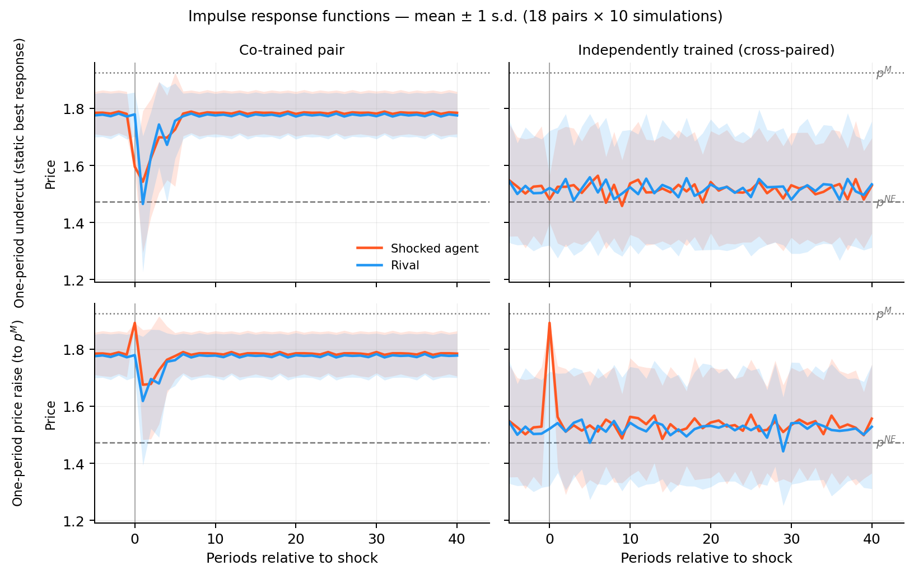
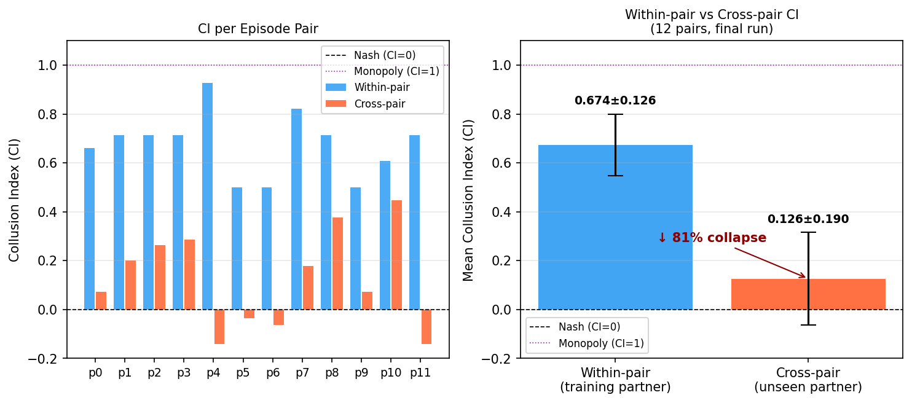
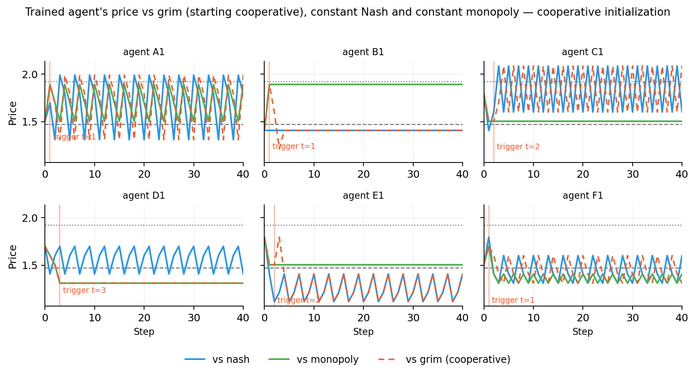
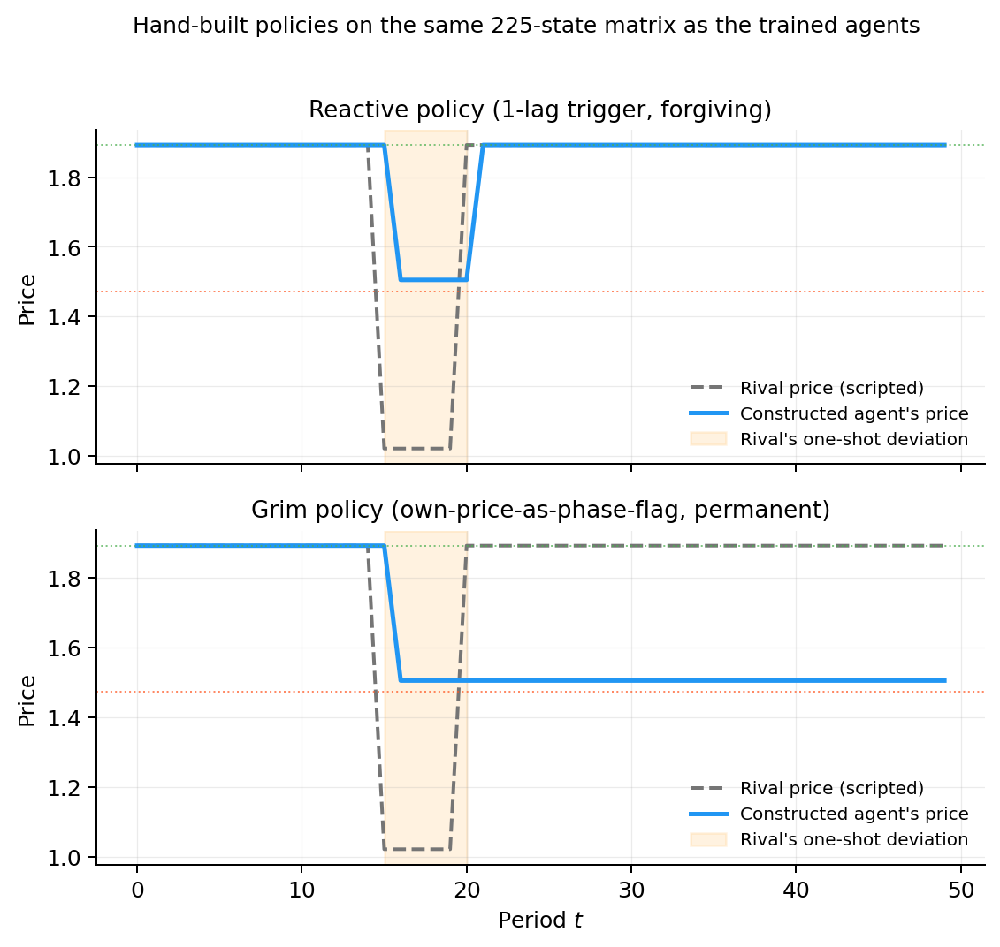
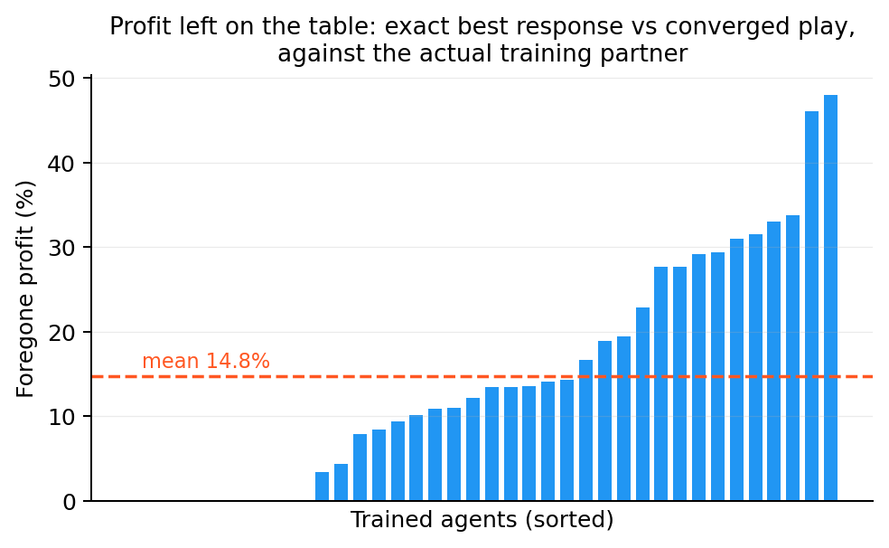
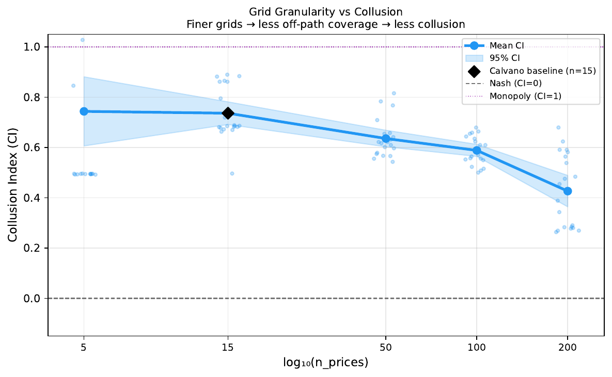

When pricing algorithms "agree" without agreeingQuando algoritmos de preço "combinam" sem combinar
Is the drop-and-return pattern a punishment mechanism, or just a shape?O padrão de queda e retorno é um mecanismo de punição, ou só um desenho?
In 2020, Calvano, Calzolari, Denicolò and Pastorello showed that two independent Q-learning algorithms, pricing in a simulated duopoly without ever communicating, converge to prices well above the competitive level. Their central exhibit: force one algorithm to cut its price for one round and the rival cuts too, then both return to the high price. The pattern was read as a reward–punishment scheme, the signature of a cartel.
Em 2020, Calvano, Calzolari, Denicolò e Pastorello mostraram que dois algoritmos de Q-learning independentes, fixando preços num duopólio simulado sem nunca se comunicar, convergem para preços bem acima do nível competitivo. O "exibit" central: force um algoritmo a cortar o preço por uma rodada e o rival também corta, e depois os dois voltam ao preço alto. O padrão foi lido como um esquema de recompensa e punição, a assinatura de um cartel.
We replicate the environment, confirm the pattern, and then audit the converged policies with learning switched off. None of five audits finds a punishment mechanism. What training produces instead is a basin of attraction specific to the pair, and the high prices survive because the profitable deviation is never tried, not because it would not pay.
Replicamos o ambiente, confirmamos o padrão e auditamos as políticas convergidas com o aprendizado desligado. Nenhuma das cinco auditorias encontra um mecanismo de punição. O que o treino produz é uma bacia de atração específica do par, e os preços altos sobrevivem porque o desvio lucrativo nunca é tentado, não porque não compensaria.

Partner versus strangerParceiro versus estranho
What does the algorithm carry with it, and what exists only inside the pair?O que o algoritmo carrega consigo, e o que só existe dentro do par?
Laboratory economics distinguishes the partner design, where you always play with the same person, from the stranger design, where your partner is swapped. What survives the swap is a norm of your own; what disappears was an arrangement of that pair. All evidence on algorithmic collusion had been collected in the partner design: the pair that learned together is the pair that gets evaluated.
A economia experimental distingue o desenho partner, em que você joga sempre com a mesma pessoa, do desenho stranger, em que o seu par é trocado. O que sobrevive à troca é uma norma sua; o que desaparece era um acordo daquele par. Toda a evidência sobre colusão algorítmica tinha sido coletada no desenho partner: o par que aprendeu junto é o par avaliado.
Calvano et al. did rematch converged agents, with learning still on, and saw coordination collapse and then rebuild over tens of thousands of further rounds. We turn that exercise into a test: freeze the policies, pair an agent from run A with an agent from run B, and measure what the policy carries before any re-learning.
Calvano et al. chegaram a rematchar agentes convergidos, com o aprendizado ligado, e viram a coordenação colapsar e se reconstruir ao longo de dezenas de milhares de rodadas. Nós transformamos esse exercício num teste: congelar as políticas, parear um agente da simulação A com um da simulação B, e medir o que a política carrega antes de qualquer re-aprendizado.

Five audits of the mechanismCinco auditorias do mecanismo
A punishment rule reacts to deviations, tracks the rival, and makes deviating unprofitable. Does the learned response have any of that?Uma regra de punição reage ao desvio, acompanha o rival e torna desviar não lucrativo. A resposta aprendida tem algo disso?
The response ignores the direction of the deviationA resposta ignora o sentido do desvio
Force the algorithm to raise its price, a move that favors the rival. The rival reacts as it does to a cut: it drops and then returns. A rule built to punish betrayal does not punish generosity. This reproduces Epivent and Lambin (2024).
Force o algoritmo a subir o preço, um gesto que favorece o rival. O rival reage como reage a um corte: cai e depois volta. Uma regra feita para punir traição não pune generosidade. Isso reproduz Epivent e Lambin (2024).
No working model of the opponentNenhum modelo do oponente
Against a grim-trigger punisher started cooperative, 22 of 24 agents undercut within four rounds and absorb the permanent punishment. They destroy an arrangement the opponent stood ready to enforce.
Contra um punidor grim-trigger iniciado cooperativo, 22 de 24 agentes cortam em até quatro rodadas e absorvem a punição permanente. Destroem um acordo que o oponente estava pronto para impor.
No best-response structure off the pathSem estrutura de melhor resposta fora do caminho
The 225-entry policy can be read cell by cell. The learned reaction functions have a mean Spearman correlation of 0.016 with the static best response. Only the on-path point makes economic sense.
A política de 225 entradas pode ser lida célula a célula. As funções de reação aprendidas têm correlação de Spearman média de 0,016 com a melhor resposta estática. Só o ponto do caminho faz sentido econômico.
The return is over-determined, not selectiveO retorno é sobre-determinado, não seletivo
Two frozen policies define a deterministic map on 225 states. In 17 of 18 pairs there is a single attractor whose basin is the whole state space: any perturbation returns, for any reason. Random tables return only 62% of the time; trained pairs, 100%.
Duas políticas congeladas definem um mapa determinístico sobre 225 estados. Em 17 de 18 pares há um único atrator cuja bacia é todo o espaço: qualquer perturbação volta, por qualquer motivo. Tabelas aleatórias voltam 62% das vezes; pares treinados, 100%.
The table could express punishmentA tabela poderia expressar punição
Two hand-built rules in the same 225 × 15 matrix, one that punishes and forgives and one that punishes forever, produce the right dynamics by construction. The capacity is there; learning did not use it.
Duas regras construídas à mão na mesma matriz 225 × 15, uma que pune e perdoa e outra que pune para sempre, produzem a dinâmica certa por construção. A capacidade existe; o aprendizado não a usou.


What is deterred, and what is notO que é dissuadido, e o que não é
What if the deviation were made by someone who knows what they are doing?E se o desvio fosse feito por alguém que sabe o que está fazendo?
The original test measures a naive deviation: cut for one round, then return to the old policy. It does not pay, and we confirm it in 18 of 18 pairs. But no optimizer would choose that deviation. Fixing each partner's frozen policy and solving the induced 225-state decision problem exactly, the optimal deviation improves on converged profit by 14.8% on average.
O teste original mede um desvio ingênuo: cortar por uma rodada e voltar à política antiga. Não compensa, e confirmamos isso em 18 de 18 pares. Mas nenhum otimizador escolheria esse desvio. Fixando a política congelada de cada parceiro e resolvendo exatamente o problema de decisão induzido, de 225 estados, o desvio ótimo melhora o lucro convergido em 14,8% na média.
In the vocabulary of Calvano et al. (2023), the deterrence is incomplete: genuine with respect to the one-period deviation they test, spurious with respect to the optimal one. The high prices are not enforced; they are undisturbed.
No vocabulário de Calvano et al. (2023), a dissuasão é incompleta: genuína em relação ao desvio de um período que eles testam, espúria em relação ao desvio ótimo. Os preços altos não são defendidos; são apenas não perturbados.


Paper, code and dataArtigo, código e dados
Kauê Lopes de Moraes and Rodrigo De Losso (University of São Paulo). Algorithmic Collusion Without Deterrence: Auditing the Punishment Mechanism in Q-Learning Pricing Agents. 7th ACM International Conference on AI in Finance (ICAIF '26), Milan, November 2026. Open access, CC BY 4.0.
Kauê Lopes de Moraes e Rodrigo De Losso (Universidade de São Paulo). Algorithmic Collusion Without Deterrence: Auditing the Punishment Mechanism in Q-Learning Pricing Agents. 7th ACM International Conference on AI in Finance (ICAIF '26), Milão, novembro de 2026. Acesso aberto, CC BY 4.0.
doi:10.1145/3858063.3858865 · PDF (camera-ready)PDF (camera-ready) · repositoryrepositório
The converged Q-tables are in results/, so every figure can be regenerated without retraining. Scripts run from the repository root.
As Q-tables convergidas estão em results/, então toda figura pode ser regenerada sem retreinar. Os scripts rodam a partir da raiz do repositório.
| ResultResultado | Script | InputEntrada |
|---|---|---|
| Impulse responses (Fig. 3)Respostas ao impulso (Fig. 3) | analysis/scripts/plot_impulse_ce_gap.py | results/impulse_response__20260807/ |
| Cooperative punisher (Fig. 4)Punidor cooperativo (Fig. 4) | analysis/scripts/overlay_cooperative_init.py | results/cross_deploy__…/training/*/agents/ |
| Random-policy null (Fig. 5)Nulo de políticas aleatórias (Fig. 5) | analysis/scripts/null_model_impulse_response.py | same Q-tablesas mesmas Q-tables |
| Capacity control (Fig. 6)Controle de capacidade (Fig. 6) | analysis/scripts/punishment_representational_capacity.py | none (constructive)nenhuma (construtivo) |
| Cross-pairing (Fig. 7)Pares cruzados (Fig. 7) | analysis/scripts/plot_cross_deploy_analysis.py | results/cross_deploy__…/eval/ |
| Best-response gain (Fig. 8)Ganho da melhor resposta (Fig. 8) | analysis/scripts/interpretable_ce_gap.py | Q-tables + reference runQ-tables + run de referência |
| Grid granularity (Fig. 9)Granularidade da grade (Fig. 9) | analysis/scripts/plot_grid_sensitivity.py | results/grid_sensitivity__20260807_144718/ |
python -m venv .venv && source .venv/bin/activate pip install -r requirements.txt python -m pytest -q tests
@inproceedings{moraes2026deterrence,
author = {Lopes de Moraes, Kau{\^e} and De Losso, Rodrigo},
title = {Algorithmic Collusion Without Deterrence: Auditing the Punishment
Mechanism in {Q}-Learning Pricing Agents},
booktitle = {7th ACM International Conference on AI in Finance (ICAIF '26)},
year = {2026}, publisher = {ACM}, address = {Milan, Italy},
doi = {10.1145/3858063.3858865}
}